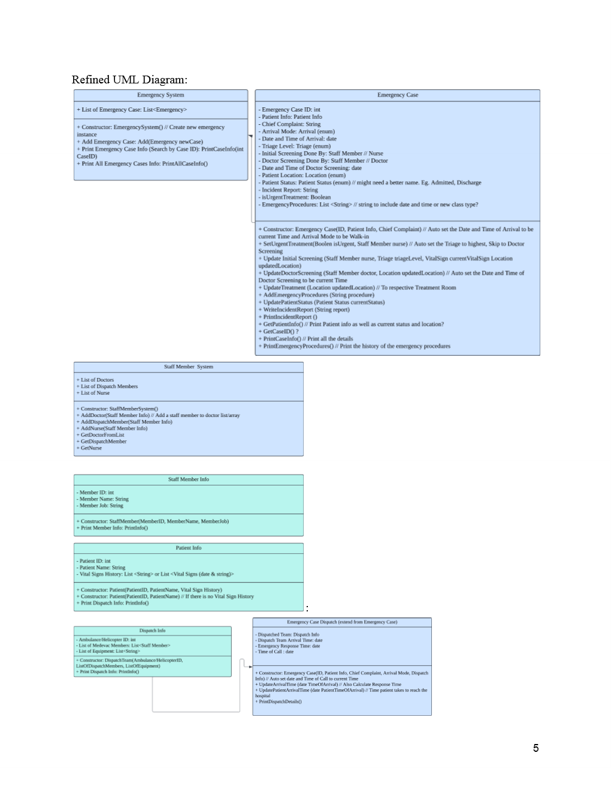

Emergency & Ambulance Management
A two-phase CSC1109 Object-Oriented Programming project completed during my second trimester in 2025, starting as a Java emergency and ambulance services module before expanding into a larger hospital management system through cross-team integration with appointment, radiology, and surgery workflows.

This project was built for CSC1109 Object-Oriented Programming during my second trimester in 2025 and centered on a hospital emergency workflow. In Phase 1, our group designed a Java console application for handling emergency cases, ambulance or helicopter dispatches, staff records, patient information, and reporting in one menu-driven system.
The problem focus was operational rather than purely academic: delayed responses, poor resource allocation, fragmented communication, and manual reporting. Our module addressed that by structuring emergency case management around dedicated classes, file-based persistence, dispatch tracking, patient records, and report generation.
In Phase 2, the project moved beyond a standalone module and into system integration. The emergency workflow was connected with appointment scheduling and later aligned with radiology and surgery modules by introducing shared patient data, synchronized emergency staff records, and architectural changes that made the combined hospital workflow more consistent.
Phase 1 build
- Designed a menu-driven emergency services system with modules for emergency case management, dispatch management, staff management, patient records, and reporting.
- Modelled the workflow through OOP classes such as EmergencySystem, EmergencyCase, EmergencyCase_Dispatch, DispatchInfo, staff-related classes, and patient records.
- Handled multiple arrival modes including walk-in, ambulance, and helicopter cases, while tracking triage, treatment flow, location, and timing details.
Phase 2 integration
- Integrated the emergency workflow with appointment scheduling first, then aligned the wider system with radiology and surgery modules.
- Used a unified patient class and an EmergencyMember bridge class to keep data consistent between modules without rewriting every original class structure.
- Extended the hospital workflow with synchronized staff data, ER room availability checks, and shared patient handling across module boundaries.
My contribution
- Implemented features around adding emergency procedures to cases.
- Worked on updating patient location as cases moved through the emergency workflow.
- Built or supported the active emergency case viewing flow so users could monitor ongoing cases more easily.